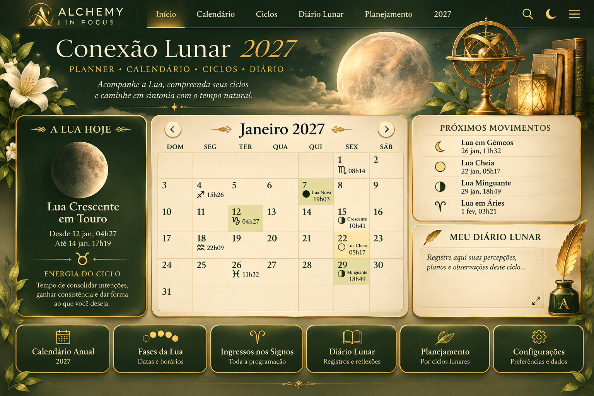

Lua na data escolhida
Consulte as fases no planner
Próximos movimentos
Consulte o calendário lunar
Dados sujeitos à auditoria astronômica.
Meu Diário Lunar
Salvo neste navegador
ENSAIO INTERNO, NÃO PUBLICADO. A arte original permanece como imagem de fundo, sem edição. Os painéis sobrepostos são uma prova de posicionamento e ainda precisam de aprovação visual. As 49 fases principais são dados preliminares do projeto, exibidos no horário de São Paulo; exigem auditoria independente.

Consulte as fases no planner
Consulte o calendário lunar
Dados sujeitos à auditoria astronômica.
Salvo neste navegador